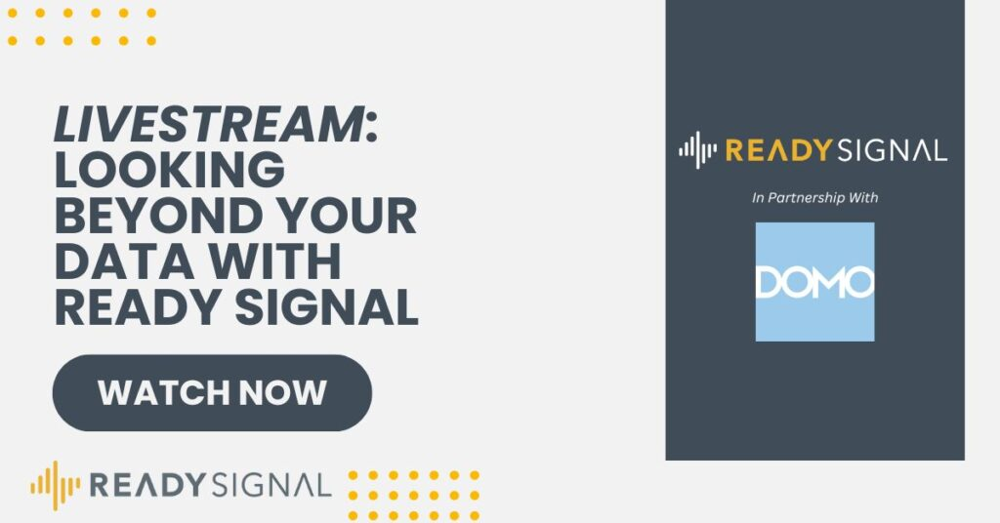

Are you eager to explore the untapped potential of external data and gain a comprehensive view of your business landscape? Ready Signal recently conducted an insightful livestream event titled “Looking Beyond Your Data with Ready Signal.” This event delved into the significance of leveraging external data and how Ready Signal empowers organizations to make better-informed decisions. If you missed this enlightening livestream, worry not! In this blog post, we’ll provide a summary of the key insights from the event and explore how Ready Signal is transforming the way businesses utilize external data. But before we dive in, you can catch the full livestream here:
Unlocking the Power of External Data
While internal data is invaluable, it often provides only a partial view of the broader business landscape. External data encompasses a wealth of information from various sources such as social media, economic indicators, public records, and more. By integrating external data with internal data, businesses can gain a deeper understanding of customer behavior, industry trends, and other external factors that impact their operations.
Ready Signal: Unleashing the Potential
Ready Signal is at the forefront of harnessing external data for organizations. With its advanced data enrichment and integration capabilities, Ready Signal empowers businesses to access and utilize external data seamlessly. By breaking down data silos and integrating external data into existing workflows, Ready Signal enables organizations to make data-driven decisions that drive growth and success. Click here to view the full data catalog of Ready Signal.
Livestream Highlights
The “Looking Beyond Your Data with Ready Signal” livestream event showcased the transformative potential of external data and how Ready Signal adds value to businesses. Key highlights of the event included:
- Understanding External Data: Participants gained insights into the diverse types of external data available and its relevance to various industries and use cases.
- Data Integration Made Easy: The livestream demonstrated how Ready Signal streamlines the integration of external data with internal data, providing a holistic view of business insights.
- Data-Driven Decision Making: Attendees learned how Ready Signal’s enriched data enhances decision-making processes and helps businesses stay agile and responsive to dynamic market conditions.
- Real-world Success Stories: The event featured real-world success stories, illustrating how organizations have leveraged Ready Signal to transform their operations and gain a competitive edge.
In the era of data-driven decision making, harnessing external data is pivotal for businesses to thrive and adapt to evolving market dynamics. The “Looking Beyond Your Data with Ready Signal” livestream event shed light on the transformative potential of external data and the role Ready Signal plays in helping organizations make data-informed decisions. By integrating external data seamlessly, businesses can gain a competitive advantage and uncover new opportunities for growth and innovation.
Note: For a more in-depth understanding and to watch the full livestream, visit the Ready Signal event page: Looking Beyond Your Data with Ready Signal.